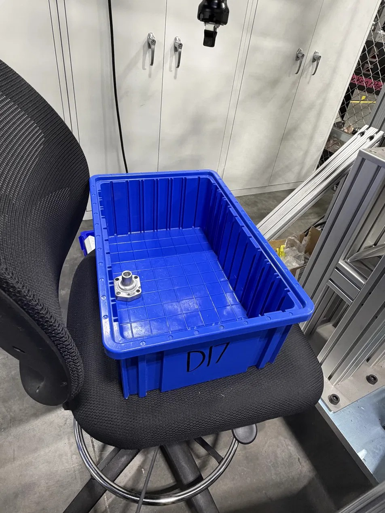

Find something pickable
A 3D scan of the bin becomes a point cloud, and the vision system has to decide which part is actually graspable rather than buried or lying against a wall.
A collaborative robot that reaches into a bulk bin, finds a part lying at whatever angle it happened to land, and picks it. No fixtures, no trays, no operator orienting anything first.
Mechanical Engineering Intern · Rochester Sensors, an Amphenol company · Dallas, TX

Most automation cheats by removing the problem: parts arrive in a tray, a nest, or on a belt in a known orientation, and the robot repeats one motion forever. Here the parts arrive in a tote, in a pile, at arbitrary positions and angles, sometimes overlapping. Nothing about the next pick is the same as the last one.
A 3D scan of the bin becomes a point cloud, and the vision system has to decide which part is actually graspable rather than buried or lying against a wall.
The gripper has to enter a steel tote, close on the part, and come back out without touching the bin, another part, or itself.
Downstream only works if the part leaves the cell in a known orientation, so the grip has to be registered to the part geometry, not just to whatever surface is facing up.
The Keyence system scans the tote and builds a height map of everything in it. Warm colours are close to the camera and cool colours are farther away, so a part sitting proud of the pile reads immediately. From that surface, 3D Search matches the part geometry and returns candidate picks with position and rotation.


Detection is only half of it. The cell then has to prove it can reach the part and get back out. Path planning simulates the arm against the scanned point cloud and the bin walls before anything moves, and the acceptance conditions are tunable: how much a candidate part may be overlapped by others before it is rejected, how much clearance to demand from the sides of the box, and how long to keep searching before giving up on that scan.

A maximum object overlap threshold rejects candidates that are pinned under other parts, which is the usual cause of a pick that looks fine on screen and fails in the bin.
A judgment margin around the bin sides keeps the gripper from clipping the tote on entry or on the way back out with a part.
If no valid path is found inside the time budget, the cell stops hunting and takes a new scan rather than stalling the line.
Before the cell, these parts were sorted out of bulk by hand. The cell now runs at 15 to 30 parts per minute depending on how the pile presents, and it is the first station of a phased plan to move operator hours onto work that actually needs a person.
Teaching an arm to repeat a motion is straightforward. The engineering here was in the conditions: deciding how much overlap is too much, how much clearance the gripper really needs, and when to stop planning and rescan. Those thresholds are what separate a cell that demos well from one that runs a shift without someone standing next to it.